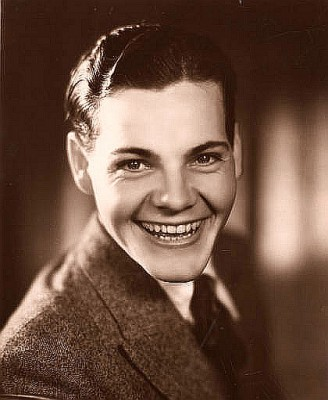
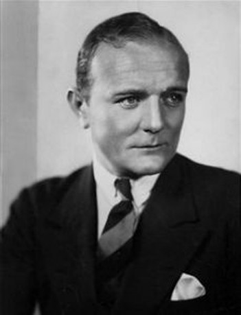

#6356 Hello, Dolly!
Auszeichnungen: 3 Oscars gewonnen für 4 Oscars nominiert

 IMDB-Wertung: 7.2 / 10
IMDB-Wertung: 7.2 / 10  Tomatometer: 43
Tomatometer: 43  Metascore: 0
Metascore: 0 
Dolly, eine junge und knusprige Witwe, wird mit dem Leben auf ihre spezielle Weise fertig. Sie stiftet Ehen, erteilt Tanzunterricht, unterweist junge Männer in Sachen Liebe und ältere Herren in Sachen Geldanlage. Souverän klebt und kittet sie alles: Ehen wie Konzerne. Und da sie schon mal am Organisieren ist, besorgt sie sich gleich auch eine persönliche Kleinigkeit - einen millionenschweren Ehemann...
Jahr: 1969
Dauer: 148 Minuten
FSK:
Land: USA Studio: Twentieth Century - Fox Film CorporationTonspuren: DTS - ,
Untertitel: Deutsch,
Auflösung: 1080p (1920x872) Größe: 11161 MB
Genre: Komödie, Abenteuer, Liebe, Musical
Regisseur:  Gene Kelly
Gene Kelly
Drehbuch: Michael Stewart
Soundtrack:
Darsteller:
 Barbra Streisand als Dolly Levi
Barbra Streisand als Dolly Levi Walter Matthau als Horace Vandergelder
Walter Matthau als Horace Vandergelder- Michael Crawford als Cornelius Hackl
- Marianne McAndrew als Irene Molloy
- E.J. Peaker als Minnie Fay
- Tommy Tune als Ambrose Kemper
- David Hurst als Rudolph Reisenweber
 Fritz Feld als Rudolph's Assistant
Fritz Feld als Rudolph's Assistant J. Pat O'Malley als Policeman in Park
J. Pat O'Malley als Policeman in Park- Louis Armstrong als Orchestra Leader
 Rutanya Alda als Townsperson , uncredited
Rutanya Alda als Townsperson , uncredited- George Barrows als Policeman , uncredited
 William 'Billy' Benedict als News Vendor , uncredited
William 'Billy' Benedict als News Vendor , uncredited Billy Bletcher als Minor Role , uncredited
Billy Bletcher als Minor Role , uncredited Scatman Crothers als Mr. Jones - Porter , uncredited
Scatman Crothers als Mr. Jones - Porter , uncredited Billy Curtis als Midget , uncredited
Billy Curtis als Midget , uncredited- Linda Dano als Minor Role , uncredited
 Lester Dorr als Workman , uncredited
Lester Dorr als Workman , uncredited Sam Edwards als Laborer , uncredited
Sam Edwards als Laborer , uncredited Morgan Farley als Workman / Onlooker , uncredited
Morgan Farley als Workman / Onlooker , uncredited- William Fawcett als Customer , uncredited
 James Gonzalez als Diner Patron , uncredited
James Gonzalez als Diner Patron , uncredited- Chester Hayes als Stiltwalker , uncredited
- Nolan Leary als Workman , uncredited
 Ted Mapes als Policeman , uncredited
Ted Mapes als Policeman , uncredited- Robert Neal Marshall als Boy with Hoop , uncredited
 James McEachin als Laborer , uncredited
James McEachin als Laborer , uncredited- Al McGranary als Lleweyn Codd , uncredited
- Joe Ploski als Laborer , uncredited
-  Eddie Quillan als Mr. Cassidy , uncredited
-  Jack Raine als Elderly Man , uncredited
- Ralph Roberts als Policeman , uncredited
- Tucker Smith als Dancer , uncredited
- Marilyn Tindall als Girl on Meat Packer's Float , uncredited
- Lisa Todd als Rhine Maiden , uncredited
 Guy Wilkerson als Laborer , uncredited
Guy Wilkerson als Laborer , uncredited- Danny Lockin als Barnaby Tucker
- Joyce Ames als Ermengarde
- Judy Knaiz als Gussie Granger
- Richard Collier als Vandergelder's Barber
- David Ahdar als Laborer , uncredited
- Will Ahern als Paper Ricker / Dancer , uncredited
- Melanie Alexander als Dancer / skeleton crew , uncredited
- Ben Archibek als Young Lover , uncredited
- John Arnold als Young Man , uncredited
- Roger Arroyo als Midget , uncredited
- Robert Bakanic als Dancer , uncredited
- George Boyce als Dancer , uncredited
- Bettina Brenna als Rhine Maiden , uncredited
- Budd Bryan als Dancer , uncredited
Datei: X:\1969\Hello, Dolly! (1969, FSK, 1920x872).mkv seit 10.06.2017
Festplatte: HD 1900-1970
 Es gibt insgesamt 22 Filme in der Gruppe '1969'
Es gibt insgesamt 22 Filme in der Gruppe '1969'